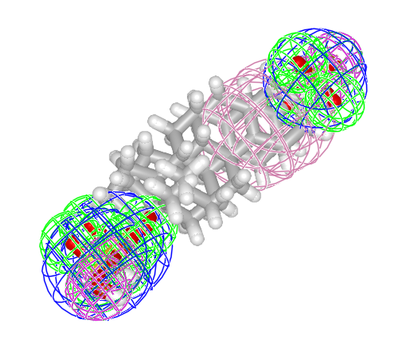
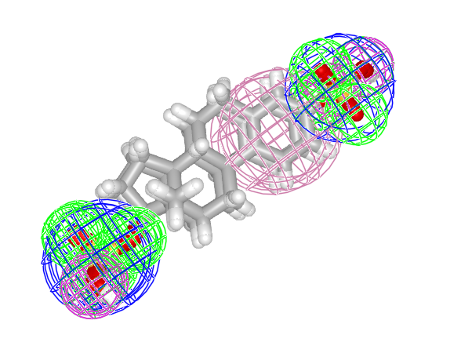

MolecularGaussians.jl
MolecularGaussians.jl aligns and compares small molecules by modeling them as Gaussian mixture models. A molecule read from an .sdf file, or a chosen set of its pharmacophore features, is represented as a mixture of isotropic Gaussians; GaussianMixtureAlignment.jl then supplies the overlap, distance, and rigid-alignment operations that act on those mixtures.
See Concepts for the ideas behind the representation, and the API reference for the full list of exported and public names.
Installation
MolecularGaussians.jl is registered in the General registry:
julia> using Pkg; Pkg.add("MolecularGaussians")Building GMMs from molecules
A PharmacophoreGMM holds one labeled IsotropicGaussian per feature, each tagged with its pharmacophore family. The families are chosen by a feature_maps dictionary, which parse_feature_definitions derives from bundled SMARTS definitions.
julia> datadir = joinpath(pkgdir(MolecularGaussians), "assets", "data");
julia> mol1 = sdftomol(joinpath(datadir, "E1050_3d.sdf"));
julia> mol2 = sdftomol(joinpath(datadir, "E1103_3d.sdf"));
julia> familydefs = parse_feature_definitions();
julia> families = [:Donor, :Acceptor, :Aromatic, :NegIonizable];
julia> pgmm1 = PharmacophoreGMM(mol1; feature_maps = feature_maps(mol1, familydefs, families))
PharmacophoreGMM{3, Float64, Symbol, SDFMolGraph} from molecule with formula C18H24O8S2 with 13 Gaussians labeled:
[:Acceptor, :NegIonizable, :Donor, :Aromatic]
julia> pgmm2 = PharmacophoreGMM(mol2; feature_maps = feature_maps(mol2, familydefs, families))
PharmacophoreGMM{3, Float64, Symbol, SDFMolGraph} from molecule with formula C18H24O5S with 9 Gaussians labeled:
[:Acceptor, :NegIonizable, :Donor, :Aromatic]Overlap, distance, and Tanimoto similarity
overlap, distance, and tanimoto compare two mixtures. distance is exported by several loaded packages, so it is qualified here to select the MolecularGaussians method.
julia> round(overlap(pgmm1, pgmm2); digits = 4)
14.6988
julia> round(MolecularGaussians.distance(pgmm1, pgmm2); digits = 4)
8.3516
julia> round(tanimoto(pgmm1, pgmm2); digits = 4)
0.6377Aligning two GMMs
gogma_align searches for the rigid transformation that maximizes overlap. Its branch-and-bound search is stochastic when nextblockfun = GMA.randomblock, so the exact numbers below vary from run to run and this block is illustrative rather than doctested.
julia> using GaussianMixtureAlignment; const GMA = GaussianMixtureAlignment;
julia> res = gogma_align(pgmm1, pgmm2; nextblockfun = GMA.randomblock, maxsplits = 10000);
julia> round(overlap(res.tform(pgmm1), pgmm2); digits = 4) # higher than before alignment
15.6091
julia> round(tanimoto(res.tform(pgmm1), pgmm2); digits = 4) # higher than before alignment
0.7050Alignment maximizes overlap and similarity between the models while minimizing their distance, so the post-alignment overlap and Tanimoto values exceed their pre-alignment counterparts.
Plotting molecules and their Gaussian models
pharmacophoredisplay plots one or more PharmacophoreGMMs together with their molecules. It is provided by a package extension and requires a Makie backend to be loaded.
julia> using GLMakie
julia> MolecularGaussians.pharmacophoredisplay(pgmm1, pgmm2) # unaligned
julia> MolecularGaussians.pharmacophoredisplay(res.tform(pgmm1), pgmm2) # aligned
